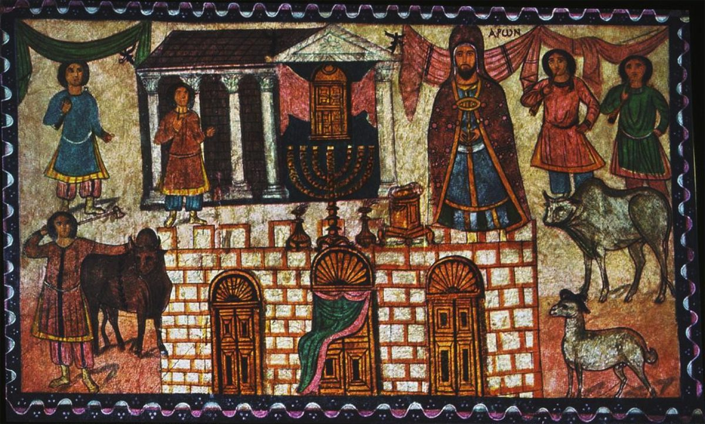

Hebreos 8 — La Traducción Mister

⚠ Pintada en el muro de una sinagoga junto al Éufrates pocos años antes de que la ciudad cayera en 256: Aarón, nombrado en griego, junto al santuario de la tienda del desierto, que el pintor dibujó con la forma de un templo clásico de su propia época; una imagen, ella misma, del santuario terrenal como «copia y sombra de las cosas celestiales» (versículo 5).

Notas del traductor
«Ahora bien, el punto principal de lo que decimos es este: tenemos tal sumo sacerdote, que se sentó a la diestra del trono de la Majestad en los cielos». Kephálaion, «punto principal», está en dos versículos: aquí, y el «Yo adquirí esta ciudadanía por una gran suma» del tribuno en Hechos 22:28 (diccionario). La palabra significa la cabeza de un asunto, o la suma de dinero a la que asciende, y el estante se divide entre las dos. «Se sentó a la diestra» es la línea del Salmo 110:1, dicha ya del Hijo en Hebreos 1:3, «se sentó a la diestra de la Majestad en las alturas». Megalōsýnē, «Majestad», está en tres versículos: Hebreos 1:3, aquí, y Judas 1:25 (diccionario); en Hebreos es una manera reverente de nombrar a Dios. La RV 1909 dice «ASI que, la suma acerca de lo dicho es»; la RV60 dice «Ahora bien, el punto principal de lo que venimos diciendo»; la TNM 1987 dice «este es el punto principal».
«Ministro del santuario y de la tienda verdadera, que levantó Jehová, no un ser humano». Leitourgós, «ministro», está en cinco versículos, entre ellos los ángeles como «ministros» de Dios en Hebreos 1:7 y los gobernantes como «servidores públicos de Dios» en Romanos 13:6 (diccionario). «El santuario» es un plural griego, «los [lugares] santos» o «las [cosas] santas», y los lectores lo entienden de las dos maneras. «Verdadera» es alēthinós, como en «la vid verdadera» (diccionario): real, frente a una copia. Pēgnymi, «levantar» una tienda, está en un solo versículo del Nuevo Testamento (diccionario). «Que levantó el Señor» es palabra por palabra el griego de Números 24:6, «como tiendas que levantó el Señor» (comprobado), donde el hebreo, tal como lo lee el Números de esta traducción, tiene «como áloes que Jehová ha plantado»; aquí el griego dice kyrios, y el que levanta la tienda es Dios, así que esta traducción pone «Jehová». Robinson–Pierpont tiene «y no un ser humano» (el aparato). La RV60 dice «que levantó el Señor, y no el hombre»; la RV 1909 dice «Ministro del santuario, y de aquel verdadero tabernáculo»; la TNM 1987 dice «que Jehová levantó, y no el hombre».
«Porque todo sumo sacerdote es constituido para ofrecer dones y sacrificios … Pues si estuviera en la tierra, ni siquiera sería sacerdote, ya que hay quienes ofrecen los dones según la ley». La primera frase repite Hebreos 5:1, «para ofrecer dones y sacrificios por los pecados». En la tierra el sacerdocio pertenecía a los hijos de Aarón, y Hebreos 7:14 ha dicho que la tribu del Señor era Judá. El presente, «hay quienes ofrecen», lo leen unos como señal de que todavía se ofrecían sacrificios en Jerusalén cuando se escribió la carta, y otros como el presente del propio texto de la Ley, ya que el autor habla de la tienda y nunca nombra el templo. Robinson–Pierpont tiene «Porque si» y «los sacerdotes que ofrecen» (el aparato). La RV60 dice «habiendo aún sacerdotes que presentan las ofrendas según la ley»; la RV 1909 dice «ni aun sería sacerdote»; la NVI dice «pues aquí ya hay sacerdotes que presentan las ofrendas en conformidad con la Ley».
«Estos sirven a una copia y sombra de las cosas celestiales, así como Moisés fue advertido cuando iba a terminar la tienda: ‘Mira’, dice, ‘que hagas todo conforme al patrón que se te mostró en el monte’». Hypódeigma está en seis versículos; en Hebreos 4:11 es el «ejemplo» de desobediencia, y en Juan 13:15 el «ejemplo» de los pies lavados, y aquí una «copia» (diccionario). «Sombra» es skiá, como en Colosenses 2:17, «sombra de lo que ha de venir» (diccionario). «Fue advertido» es chrēmatízō, el verbo de los magos «advertidos en sueños» en Mateo 2:12 y de Noé «advertido de lo que aún no se podía ver» en Hebreos 11:7 (diccionario). La cita es Éxodo 25:40, que esta traducción da desde el hebreo «conforme a su patrón, que te está siendo mostrado en el monte»; el griego del Éxodo no tiene «todo», y Hebreos lo añade (comprobado). Esteban usa la misma palabra en Hechos 7:44, «conforme al patrón que había visto» (diccionario). La RV60 dice «los cuales sirven a lo que es figura y sombra de las cosas celestiales»; la RV 1909 dice «conforme al dechado que te ha sido mostrado en el monte»; la TNM 1987 dice «rinden servicio sagrado en una representación típica y sombra de las cosas celestiales».
«Pero ahora ha obtenido un ministerio tanto más excelente cuanto es también mediador de un pacto mejor, que ha sido establecido sobre mejores promesas». Diaphōróteros, «más excelente», está en dos versículos: el nombre «más excelente» de Hebreos 1:4, y aquí. Leitourgía, «ministerio», está en seis versículos, entre ellos los días de «servicio» de Zacarías en el templo en Lucas 1:23 (diccionario). Mesítēs, «mediador», está en seis versículos, entre ellos Gálatas 3:19, la ley dispuesta «en mano de un mediador», y 1 Timoteo 2:5, «un solo mediador entre Dios y los seres humanos» (diccionario). «Establecido» es el verbo de Hebreos 7:11, donde el pueblo «recibió la ley»: el pacto mejor se legisla, como se legisló el primero. La RV60 dice «Pero ahora tanto mejor ministerio es el suyo»; la NVI dice «puesto que se basa en mejores promesas»; la TNM 1987 dice «que ha sido establecido legalmente sobre mejores promesas».
«Porque si aquel primero hubiera sido sin falta, no se habría buscado lugar para un segundo. Porque, hallándoles falta, dice». El griego dice solo «aquel primero»; «pacto» se sobrentiende del versículo 6. «Sin falta» y «hallándoles falta» son una sola raíz, ámemptos y mémphomai, y esta traducción conserva el par; en otros lugares ámemptos es «irreprochable», como en Filipenses 3:6 (diccionario). Mémphomai, «hallar falta», está en dos versículos: «¿Por qué todavía encuentra faltas?» en Romanos 9:19, y aquí (diccionario). El texto impreso tiene «ellos» como objeto de la falta, con Westcott–Hort y Nestle–Aland 28; Tregelles y Robinson–Pierpont tienen «hallando falta, les dice» (el aparato), y en esa lectura la falta puede ser del pacto más que del pueblo. Esta página no elige. La TNM 1987 dice «Porque si aquel primer pacto hubiera estado exento de falta»; la RV60 dice «Porque si aquel primero hubiera sido sin defecto», sin «pacto»; la NVI dice «Pero Dios, reprochándoles sus defectos, dijo».
«Mira: vienen días, dice Jehová, en que concluiré un pacto nuevo con la casa de Israel y con la casa de Judá». La cita, versículos 8–12, es Jeremías 31:31–34 en las Biblias en castellano, 31:30–33 en la numeración hebrea que sigue el Jeremías de esta traducción (31:30–33), y 38:31–34 en la Biblia griega. Donde el hebreo «corta» un pacto (diccionario) y el griego de Jeremías dice «pactaré», Hebreos tiene synteléō, «concluiré, llevaré a cabo» (comprobado). «Dice Jehová» es el hebreo ne’um YHVH, «declaración de Jehová», y el griego dice kyrios; esta traducción pone «Jehová» para el Dios de Israel en una cita. La frase «pacto nuevo» con kainē está en cinco versículos: la copa en Lucas 22:20 y 1 Corintios 11:25, 2 Corintios 3:6, aquí, y 9:15 (diccionario). La RV60 dice «He aquí vienen días, dice el Señor, En que estableceré con la casa de Israel y la casa de Judá un nuevo pacto»; la TNM 1987 dice «y celebraré con la casa de Israel y con la casa de Judá un nuevo pacto»; la RV 1909 dice «Y consumaré para con la casa de Israel».
⚠ «Porque ellos no permanecieron en mi pacto, y yo los descuidé, dice Jehová». Aquí Hebreos sigue el griego de Jeremías, «y yo los descuidé» (comprobado), donde el hebreo, tal como lo lee el Jeremías de esta traducción, tiene «aunque fui yo un señor para ellos» (Jeremías 31:31). Cómo llegaron los traductores griegos a leer la línea de otro modo se explica de más de una manera (dato referido, no comprobado aquí); esta página da cuenta de la diferencia y no la resuelve. Ameléō, «descuidar», está en cuatro versículos, y da la vuelta a la advertencia de Hebreos 2:3, «si descuidamos una salvación tan grande» (diccionario). Emménō, «permanecer en», está en cuatro versículos, entre ellos «permanecer en la fe» en Hechos 14:22 y «todo el que no permanece en todas las cosas escritas» en Gálatas 3:10 (diccionario). «Los tomé de la mano» es el verbo de Hebreos 2:16 (diccionario). La RV60 dice «Y yo me desentendí de ellos, dice el Señor»; la RV 1909 dice «Y yo los menosprecié, dice el Señor»; la TNM 1987 dice «de modo que dejé de interesarme en ellos».
«Porque este es el pacto que pactaré con la casa de Israel después de aquellos días, dice Jehová: poniendo mis leyes en su mente, también las escribiré sobre sus corazones; y yo seré su Dios, y ellos serán mi pueblo». «El pacto que pactaré» conserva el sustantivo y el verbo griegos de una sola raíz. El hebreo tiene «mi ley», torah, en singular, «en su interior»; el griego de Jeremías y Hebreos tienen «mis leyes» en plural, «en su mente» (comprobado). «Mente» es diánoia (diccionario). «Escribir sobre» es epigráphō, el verbo de Marcos 15:26, donde «estaba escrita la inscripción de su causa»; su sustantivo es la «inscripción» de la moneda en Mateo 22:20 (diccionario). La ley que Moisés recibió en tablas de piedra se escribe aquí en el corazón, como dice Pablo en 2 Corintios 3:3, «no en tablas de piedra sino en tablas de corazones de carne». La RV60 dice «Pondré mis leyes en la mente de ellos, Y sobre su corazón las escribiré»; la RV 1909 dice «Daré mis leyes en el alma de ellos»; la TNM 1987 dice «Porque este es el pacto que pactaré con la casa de Israel».
«Y no enseñarán cada uno a su conciudadano y cada uno a su hermano, diciendo: ‘Conoce a Jehová’, porque todos me conocerán, desde el menor hasta el mayor de ellos». Polítēs, «conciudadano», está en cuatro versículos, entre ellos el «ciudadano de una ciudad no sin distinción» de Pablo en Hechos 21:39 (diccionario). El Textus Receptus imprimió «prójimo», plēsíon, y la Reina-Valera lo sigue (comprobado en el texto impreso); el texto bizantino tiene «conciudadano», como el griego de Jeremías. «Conoce a Jehová» es el hebreo «Conoce a YHVH», con kyrios en el griego. Robinson–Pierpont tiene «desde el menor de ellos» (el aparato). La RV60 dice «Porque todos me conocerán, Desde el menor hasta el mayor de ellos»; la NVI dice «porque todos, desde el más pequeño hasta el más grande, me conocerán»; la TNM 1987 dice «cada uno a su conciudadano y cada uno a su hermano».
«Porque seré propicio a sus injusticias, y de sus pecados no me acordaré más». Híleōs, «propicio», está en dos versículos: el «¡Lejos esté eso de ti, Señor!» de Pedro en Mateo 16:22, literalmente «[Dios te sea] propicio», y aquí (diccionario). Va con hiláskomai, el «Dios, ten compasión de mí» del recaudador en Lucas 18:13 y el «hacer expiación» de Hebreos 2:17 (diccionario). El hebreo tiene «perdonaré su maldad» (Jeremías 31:33). Robinson–Pierpont añade «y de sus iniquidades» (el aparato), y la Reina-Valera lo sigue. La RV60 dice «Porque seré propicio a sus injusticias, Y nunca más me acordaré de sus pecados y de sus iniquidades»; la TNM 1987 dice «de ningún modo recordaré más sus pecados»; la NVI dice «Yo perdonaré sus iniquidades».
«Al decir ‘nuevo’, ha dado por viejo al primero; y lo que se va haciendo viejo y envejece está cerca de desaparecer». Palaióō, «hacer viejo, desgastar», está en tres versículos: «bolsas que no se desgasten» en Lucas 12:33, los cielos que «como una vestidura se envejecerán» en Hebreos 1:11, y aquí, dos veces (diccionario). Gēráskō, «envejecer», está en dos versículos: «cuando seas viejo» en Juan 21:18, y aquí (diccionario). Aphanismós, «desaparición», está en un solo versículo (diccionario). El versículo no usa la frase «antiguo pacto», que está en 2 Corintios 3:14; dice «el primero». Los lectores entienden «el primero» como el pacto del Sinaí en su conjunto, o como el sacerdocio levítico y sus sacrificios, el tema de los capítulos 7 a 10; y la cita misma hace el pacto nuevo «con la casa de Israel y con la casa de Judá». Esta página no elige. La RV 1909 dice «y lo que es dado por viejo y se envejece, cerca está de desvanecerse»; la RV60 dice «Al decir: Nuevo pacto, ha dado por viejo al primero»; la TNM 1987 dice «ha hecho anticuado al anterior».
Patrones que vale la pena recordar
Donde esta traducción conserva las palabras exactas: «el punto principal», la palabra de la «gran suma» de Hechos 22:28; «la Majestad», como en 1:3; «ministro», como en 1:7; «tienda», como en Hechos 7:44; «que levantó Jehová», las palabras del griego de Números 24:6; «copia y sombra»; «advertido», como en 11:7; «patrón», como en Éxodo 25:40 y Hechos 7:44; «más excelente», como en 1:4; «mediador»; «establecido», el verbo de 7:11; «sin falta … hallándoles falta», una sola raíz conservada; «Mira»; «concluir» un pacto; «dice Jehová»; «yo los descuidé», el verbo de 2:3; «el pacto que pactaré»; «leyes» en plural; «conciudadano»; «Conoce a Jehová»; «propicio»; y «dado por viejo», el verbo de 1:11.
Ecos pagados. El sumo sacerdote que se sentó a la diestra de Hebreos 1:3; los ministros de Hebreos 1:7; las tiendas que levantó el Señor de Números 24:6; dones y sacrificios de Hebreos 5:1; el patrón de Éxodo 25:40 y Hechos 7:44; la sombra de Colosenses 2:17; el nombre más excelente de Hebreos 1:4; el mediador de Gálatas 3:19 y 1 Timoteo 2:5; un pacto mejor de Hebreos 7:22; ¿Por qué todavía encuentra faltas? de Romanos 9:19; el pacto nuevo de Jeremías en Jeremías 31:30; la copa del nuevo pacto en Lucas 22:20; descuidar de Hebreos 2:3; tablas de corazones de carne de 2 Corintios 3:3; ten compasión de mí de Lucas 18:13; y como una vestidura se envejecerán de Hebreos 1:11.
Ecos sembrados. La «copia» en 9:23; la «sombra» en 10:1; el «mediador de un pacto nuevo» en 9:15 y 12:24; y la misma cita de Jeremías, abreviada, en 10:16–17 (todos aún por llegar en esta traducción).
Lo siguiente en este libro: Hebreos 9. La tienda del primer pacto y su mobiliario —el candelabro, la mesa, el altar de oro, el arca— y la entrada anual del sumo sacerdote «no sin sangre»; luego Cristo, que entra «una vez para siempre» con su propia sangre; un pacto que, como un testamento, entra en vigor con una muerte; y «sin derramamiento de sangre no hay perdón».